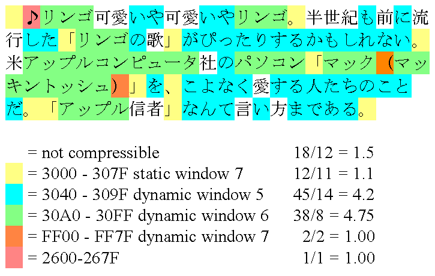

The example above consists of a short piece of text found in a recent Japanese news story. Each character is color coded to indicate which characters can be encoded using the same window. The table lists the number of occurrences of characters for a given window divided by the number of runs, yielding the average run length.
The reference encoder will encode the 120 characters of this example into 182 bytes. This is approximately 3/4 of the size required to store the text in Unicode, or any of the double byte character sets. A single window implementation, like the original Reuters' RCSU version of the Compression scheme would have required about a dozen window resets, plus would have had to resort to quoting Unicode a few more times. A complex example like this demonstrates the advantage of the multiple window implementation quite nicely.